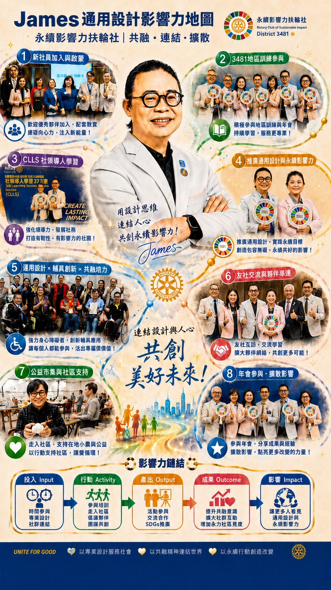

Space is not renovation, but a setting that carries care and dignity.
Industry is not competition, but an ecological chain that can mutually verify and co-create.
Most people know James for his profession: interior renovation and spatial planning. But for him, "space" has never been simply design aesthetics or construction technique.
After years of working with medical and long-term care settings, he gradually realized:
Space is itself a tool of care. This understanding gradually shifted his profession from "renovation engineering" toward "integrating health and wellness space systems."
On July 10, 2025, the Taitung St. Mary's Hospital Health Park held the first-of-its-kind Innovative Long-Term Care Resource Expo. This was not merely an exhibition, but a testing ground for launching a local industry chain.
As the principal exhibition planner, James, through his company Universal Pavilion, was responsible for the overall spatial and vendor integration design. The exhibition was divided into four thematic halls:
The vendors he invited spanned: assistive equipment, smart care technology, senior dietary design, rehabilitation exercise systems, and long-term care innovation teams. In Taitung, this was the first cross-sector integration at scale.
"I hope that through what we have done together with St. Mary's Hospital over these years, whether in frailty, dementia, or even dignified end-of-life care, this exhibition can bring some good interaction and verification with these supporting vendors. What I hope to drive is letting these partners of ours also know what St. Mary's Hospital has done in Taitung. In the future this can become a regular practice, forming a revitalization of an industry chain in Taitung."
This sentence reveals his core thinking: he does not only want to hold an event. He wants to form a chain.
The challenges facing long-term care in Taitung include: the rapid pace of population aging, an uneven distribution of medical resources, a weak industry chain, and youth outflow.
James's strategy is not to wait for government subsidies, but to:
If successful, Taitung is not only a place that is served, but an experimental base for the health and wellness industry.
At the same time, over this year James devoted himself fully to another, more long-term layout, the Xiamen Silver-Age Youth Entrepreneurship Health and Wellness Industry Incubation Base.
This is a comprehensive base for incubating the health and wellness industry, collaborative entrepreneurship between the silver-aged and youth, operations management of health and wellness projects, and experimentation with innovative models.
The focus of his learning across the strait includes: industry incubation mechanisms, models of silver-youth co-creation, standardized management of health and wellness projects, and industry cluster strategy.
This experience is not only personal expansion. It may become an accelerator for a future Taitung model.
Recently, he was further invited by the Civil Affairs and Human Resources and Social Security Bureau of the Songbei District of Harbin to assist and advise on health and wellness industry planning.
This shows that his role has shifted from executor toward health and wellness industry advisor and connector.
Different from CP's institutional-design type. Different from Lisa's cultural-demonstration type. James's type is:
Industry integration × spatial systems × ecological chain builder
What he thinks about is: supply chains, verification settings, industry revitalization, and long-term operating models.
Sustainable Life Warriors and Legacy: An Innovative Education and Training Project →
If the Club had only ideals, it would remain at advocacy. James lets the Club see:
Sustainability can become an industry.
Industry can become an ecosystem.
An ecosystem can form the scale of impact.
He is not a high-profile person. But he is a hands-on integrator.
James's impact is not slogan-style sustainability. It is: